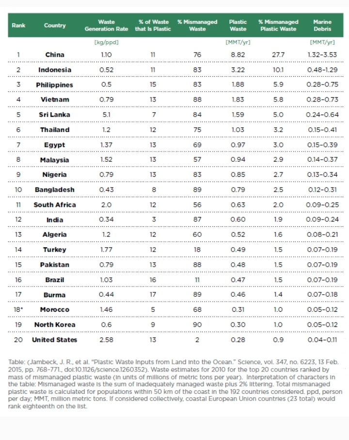

প্লাস্টিক দূষণ জরিপ WPCO এর পক্ষ থেকে.
8.3 বিলিয়ন প্লাস্টিক বিশ্বের সমুদ্র সৈকতকে দূষিত করে। কিন্তু মাত্র 1% প্লাস্টিক সমুদ্রের বর্জ্য হিসাবে শেষ হয়। 2020 সালের মধ্যে সমুদ্রের প্লাস্টিকের সংখ্যা মাছের সংখ্যারচে বেশি।
পৃথিবিতে প্লাস্টিক দূষণের পরিমাণ কত?
প্লাস্টিক দূষণ একটি বিশ্বব্যাপী সমস্যা যার সমাধানের জন্য সম্মিলিত পদক্ষেপ প্রয়োজন। আমরা আমাদের চারপাশে প্লাস্টিকের সন্ধান করতে পারি - আমাদের বাড়ী, স্কুল, কর্মক্ষেত্র এমনকি আমাদের প্রাকৃতিক জায়গাগুলিতে। তবে, বর্তমানে কেবল 9% প্লাস্টিকের পুনর্ব্যবহার করা হচ্ছে, বাকী অবতরণ জমি বা পরিবেশের মধ্যে রয়েছে। প্লাস্টিকের রাসায়নিক সংশ্লেষ এটি সম্পূর্ণরূপে পচতে অক্ষম করে, যার ফলে আমাদের গ্রহ এবং মানব স্বাস্থ্যের জন্য দূষণ তৈরি হয় এবং সমস্যা তৈরি হয়। আমরা যদি এই হারে প্লাস্টিক ব্যবহার করতে থাকি তবে আমাদের গ্রহের ক্ষতি হবে।
চীন অব্যবহৃত প্লাস্টিক বর্জ্যের সর্বোচ্চ অংশীদারকে বিশ্বব্যাপী মোটের প্রায় ২৮ শতাংশের সাথে অবদান রাখে, তারপরে ইন্দোনেশিয়ায় ১০ শতাংশ, ফিলিপাইন এবং ভিয়েতনাম উভয়ের জন্য percent শতাংশ।
বিশ্বের শীর্ষ 10 প্লাস্টিকের দূষণকারী দেশ।
সারসংক্ষেপ
প্লাস্টিক দূষণ আমাদের মহাসাগর এবং বন্যজীবন স্বাস্থ্যের উপর নেতিবাচক প্রভাব ফেলছে
উচ্চ-আয়ের দেশগুলি প্রতি ব্যক্তি আরও প্লাস্টিকের বর্জ্য উত্পাদন করে
তবে এটি প্লাস্টিকের বর্জ্য পরিচালনা যা প্লাস্টিকের মহাসাগরে প্রবেশের ঝুঁকি নির্ধারণ করে। উচ্চ-আয়ের দেশগুলিতে বর্জ্য ব্যবস্থাপনার খুব কার্যকর ব্যবস্থা রয়েছে; অব্যবস্থাপনাযুক্ত বর্জ্য - এবং প্লাস্টিক যা সমুদ্রগুলিতে শেষ হয় - তাই খুব বিরল। অনেক মধ্য ও নিম্ন-আয়ের দেশগুলিতে দরিদ্র বর্জ্য ব্যবস্থাপনার অর্থ এই যে বিশ্বব্যাপী সমুদ্রের প্লাস্টিক দূষণের মূল উত্স
এটি প্লাস্টিকের দূষণ কমাতে বিশ্বজুড়ে বর্জ্য ব্যবস্থাপনা ব্যবস্থার উন্নতিকে গুরুতর করে তোলে।
সমুদ্রের সমস্ত প্লাস্টিকের বর্জ্যের আনুমানিক 20 শতাংশ সামুদ্রিক উত্স থেকে আসে। কিছু অঞ্চলগুলিতে সামুদ্রিক উত্সগুলি আধিপত্য বিস্তার করে: গ্রেট প্যাসিফিক গার্জ প্যাচ (জিপিজিপি) -এর অর্ধেকেরও বেশি প্লাস্টিক ফিশিং নেট, দড়ি এবং লাইন থেকে আসে
মনে রাখা জরুরী যে প্লাস্টিক হ'ল এক অনন্য উপাদান যা অনেকগুলি সুবিধাসমূহ সহ: এটি সস্তা, বহুমুখী, লাইটওয়েট এবং প্রতিরোধী। এটি এটি অনেক কার্যের জন্য একটি মূল্যবান উপাদান করে তোলে। এটি পরিবেশগত সুবিধাগুলিও সরবরাহ করতে পারে: এটি খাদ্যের গুণমান, সুরক্ষা এবং খাদ্য বর্জ্য হ্রাস করতে গুরুত্বপূর্ণ ভূমিকা পালন করে। প্লাস্টিক এবং বিকল্প (বা সম্পূর্ণ নিষেধাজ্ঞার) মধ্যে বাণিজ্য-বাণিজ্যগুলি তাই জটিল এবং পরিবেশের উপর নেতিবাচক নক-অন প্রভাব তৈরি করতে পারে